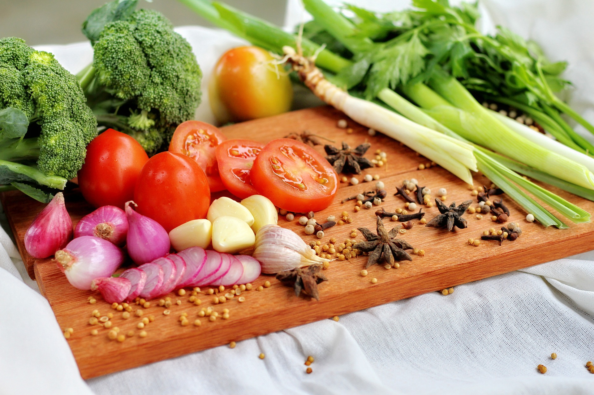

The Vegetarian Diet: A Beginner's Guide and Meal Plan
This article provides a beginner's guide to the vegetarian diet, including a sample meal plan for one week.
By Rachael Link, MS, RD April 18, 2020

The vegetarian diet has gained widespread popularity in recent years.
Some studies estimate that vegetarians account for up to 18% of the global population.
Apart from the ethical and environmental benefits of cutting meat from your diet, a well-planned vegetarian diet may also reduce your risk of chronic disease, support weight loss and improve the quality of your diet.
This article provides a beginner's guide to the vegetarian diet, including a sample meal plan for one week.
What Is a Vegetarian Diet?
The vegetarian diet involves abstaining from eating meat, fish and poultry.
People often adopt a vegetarian diet for religious or personal reasons, as well as ethical issues, such as animal rights.
Others decide to become vegetarian for environmental reasons, as livestock production increases greenhouse gas emissions, contributes to climate change and requires large amounts of water, energy and natural resources.
There are several forms of vegetarianism, each of which differs in their restrictions.
The most common types include:
• Lacto-ovo-vegetarian diet: Eliminates meat, fish and poultry but allows eggs and dairy products.
• Lacto-vegetarian diet: Eliminates meat, fish, poultry and eggs but allows dairy products.
• Ovo-vegetarian diet: Eliminates meat, fish, poultry and dairy products but allows eggs.
• Pescetarian diet: Eliminates meat and poultry but allows fish and sometimes eggs and dairy products.
• Vegan diet: Eliminates meat, fish, poultry, eggs and dairy products, as well as other animal-derived products, such as honey.
• Flexitarian diet: A mostly vegetarian diet that incorporates occasional meat, fish or poultry.
Health Benefits
Vegetarian diets are associated with a number of health benefits.
In fact, studies show that vegetarians tend to have better diet quality than meat-eaters and a higher intake of important nutrients like fiber, vitamin C, vitamin E and magnesium.
A vegetarian diet may provide several other health boosts as well.
May Enhance Weight Loss
Switching to a vegetarian diet can be an effective strategy if you’re looking to lose weight.
In fact, one review of 12 studies noted that vegetarians, on average, experienced 4.5 more pounds (2 kg) of weight loss over 18 weeks than non-vegetarians.
Similarly, a six-month study in 74 people with type 2 diabetes demonstrated that vegetarian diets were nearly twice as effective at reducing body weight than low-calorie diets.
Plus, a study in nearly 61,000 adults showed that vegetarians tend to have a lower body mass index (BMI) than omnivores — BMI being a measurement of body fat based on height and weight.
May Reduce Cancer Risk
Some research suggests that a vegetarian diet may be linked to a lower risk of cancer — including those of the breast, colon, rectum and stomach.
However, current research is limited to observational studies, which cannot prove a cause-and-effect relationship. Keep in mind that some studies have turned up inconsistent findings.
Therefore, more research is needed to understand how vegetarianism may impact cancer risk.
May Stabilize Blood Sugar
Several studies indicate that vegetarian diets may help maintain healthy blood sugar levels.
For instance, one review of six studies linked vegetarianism to improved blood sugar control in people with type 2 diabetes.
Vegetarian diets may also prevent diabetes by stabilizing blood sugar levels in the long term.
According to one study in 2,918 people, switching from a non-vegetarian to a vegetarian diet was associated with a 53% reduced risk of diabetes over an average of five years.
Promotes Heart Health
Vegetarian diets reduce several heart disease risk factors to help keep your heart healthy and strong.
One study in 76 people tied vegetarian diets to lower levels of triglycerides, total cholesterol and “bad” LDL cholesterol — all of which are risk factors for heart disease when elevated.
Similarly, another recent study in 118 people found that a low-calorie vegetarian diet was more effective at reducing “bad” LDL cholesterol than a Mediterranean diet.
Other research indicates that vegetarianism may be associated with lower blood pressure levels. High blood pressure is another key risk factor for heart disease.
Potential Downsides
A well-rounded vegetarian diet can be healthy and nutritious.
However, it may also increase your risk of certain nutritional deficiencies.
Meat, poultry and fish supply a good amount of protein and omega-3 fatty acids, as well as micronutrients like zinc, selenium, iron and vitamin B12.
Other animal products like dairy and eggs also contain plenty of calcium, vitamin D and B vitamins.
When cutting meat or other animal products from your diet, it’s important to ensure you’re getting these essential nutrients from other sources.
Studies show that vegetarians are at a higher risk of protein, calcium, iron, iodine and vitamin B12 deficiencies.
A nutritional deficiency in these key micronutrients can lead to symptoms like fatigue, weakness, anemia, bone loss and thyroid issues.
Including a variety of fruits, vegetables, whole grains, protein sources and fortified foods is an easy way to ensure you’re getting appropriate nutrition.
Multivitamins and supplements are another option to quickly bump up your intake and compensate for potential deficiencies.
Foods to Eat
A vegetarian diet should include a diverse mix of fruits, vegetables, grains, healthy fats and proteins.
To replace the protein provided by meat in your diet, include a variety of protein-rich plant foods like nuts, seeds, legumes, tempeh, tofu and seitan.
If you follow a lacto-ovo-vegetarian diet, eggs and dairy can also boost your protein intake.
Eating nutrient-dense whole foods like fruits, vegetables and whole grains will supply a range of important vitamins and minerals to fill in any nutritional gaps in your diet.
A few healthy foods to eat on a vegetarian diet are:
• Fruits: Apples, bananas, berries, oranges, melons, pears, peaches
• Vegetables: Leafy greens, asparagus, broccoli, tomatoes, carrots
• Grains: Quinoa, barley, buckwheat, rice, oats
• Legumes: Lentils, beans, peas, chickpeas.
• Nuts: Almonds, walnuts, cashews, chestnuts
• Seeds: Flaxseeds, chia and hemp seeds
• Healthy fats: Coconut oil, olive oil, avocados
• Proteins: Tempeh, tofu, seitan, natto, nutritional yeast, spirulina, eggs, dairy products
Foods to Avoid
There are many variations of vegetarianism, each with different restrictions.
Lacto-ovo vegetarianism, the most common type of vegetarian diet, involves eliminating all meat, poultry and fish.
Other types of vegetarians may also avoid foods like eggs and dairy.
A vegan diet is the most restrictive form of vegetarianism because it bars meat, poultry, fish, eggs, dairy and any other animal products.
Depending on your needs and preferences, you may have to avoid the following foods on a vegetarian diet:
• Meat: Beef, veal and pork
• Poultry: Chicken and turkey
• Fish and shellfish: This restriction does not apply to pescetarians.
• Meat-based ingredients: Gelatin, lard, carmine, isinglass, oleic acid and suet
• Eggs: This restriction applies to vegans and lacto-vegetarians.
• Dairy products: This restriction on milk, yogurt and cheese applies to vegans and ovo-vegetarians.
• Other animal products: Vegans may choose to avoid honey, beeswax and pollen.
Sample Meal Plan
To help get you started, here’s a one-week sample meal plan for a lacto-ovo-vegetarian diet.
Monday
• Breakfast: Oatmeal with fruit and flaxseeds
• Lunch: Grilled veggie and hummus wrap with sweet potato fries
• Dinner: Tofu banh mi sandwich with pickled slaw
Tuesday
• Breakfast: Scrambled eggs with tomatoes, garlic and mushrooms
• Lunch: Zucchini boats stuffed with veggies and feta with tomato soup
• Dinner: Chickpea curry with basmati rice
Wednesday
• Breakfast: Greek yogurt with chia seeds and berries
• Lunch: Farro salad with tomatoes, cucumber and feta with spiced lentil soup
• Dinner: Eggplant parmesan with a side salad
Thursday
• Breakfast: Tofu scramble with sauteed peppers, onions and spinach
• Lunch: Burrito bowl with brown rice, beans, avocado, salsa and veggies
• Dinner: Vegetable paella with a side salad
Friday
• Breakfast: Whole-wheat toast with avocado and nutritional yeast
• Lunch: Marinated tofu pita pocket with Greek salad
• Dinner: Quinoa-black-bean meatballs with zucchini noodles
Saturday
• Breakfast: Smoothie of kale, berries, bananas, nut butter and almond milk
• Lunch: Red lentil veggie burger with avocado salad
• Dinner: Flatbread with grilled garden vegetables and pesto
Sunday
• Breakfast: Kale and sweet potato hash
• Lunch: Bell peppers stuffed with tempeh with zucchini fritters
• Dinner: Black bean tacos with cauliflower rice
The Bottom Line
Most vegetarians avoid meat, poultry and fish, though some also restrict eggs, dairy and other animal products.
A balanced vegetarian diet with nutritious foods like produce, grains, healthy fats and plant-based protein may offer several benefits, but it may increase your risk of nutritional deficiencies if poorly planned.
Be sure to pay close attention to a few key nutrients and round out your diet with a variety of healthy whole foods. That way, you’ll enjoy the benefits of vegetarianism while minimizing the side effects.